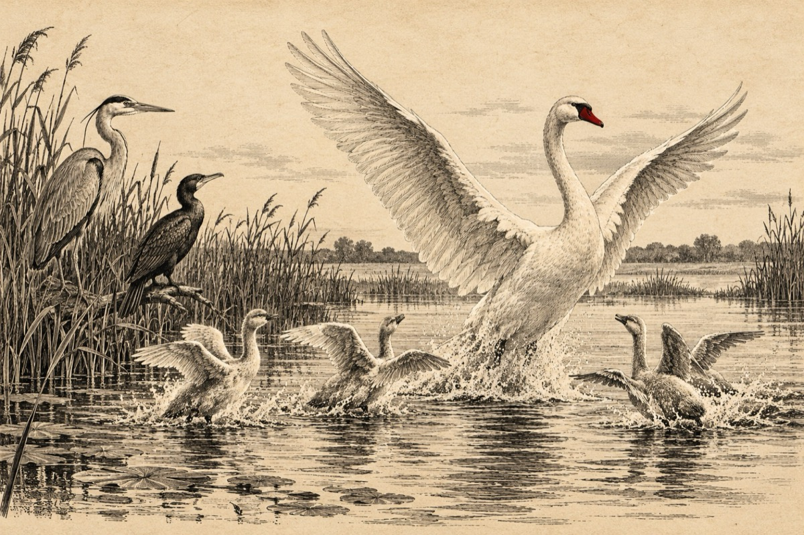

Școală de zbor
În lacul din poieniță
Undeva în deltă
Funcționează o grădiniță
Fara firma sau vreo etichetă.
Lebăda e directoare
Și în jurul ei s-au strâns
Stârcul, cormoranul, stau ca ajutoare
Și un șoim convins.
Tema- să-i învețe ca să zboare
Pe puii ce-au crescut
Lebăda din aripioare
Face primul început
Puii ce plutesc pe apă
Stau cu toții pregătiți
Lebăda încet se-nalță
Puii au rămas uimiți!
Mai în glumă, mai în șagă
Cu mișcări de-ncepători
Zborul lor dă să înceapă.
Lebăda e sus în nori!
Stârcul, șoimul, cormoranul
Fac un gest de-ncurajare
Și spre-nalturi-și iau elanul
Puii-ncep și ei să zboare.
Vasile Groza
Apare și în: Poezii cu animale.